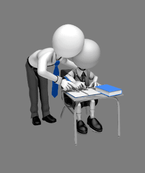

Isabella Fernanda e Larissa Ribeiro
Estudantes do curso técnico de Desenvolvimento de Sistemas da ETEC. Temos ambas 15 anos e moramos na cidade de Jundiaí.
Esta página faz parte de um dos nossos trabalhos, e queremos mostrar aqui não só o que aprendemos na programação, mas também como
a tecnologia pode ser aplicada de forma criativa.
Sobre
Alunas
Materia
Programação Web
Essa matéria é essencial ao curso de desenvolvimento de sistemas. Nessa matéria, aprendemos a desenvolver interfaces, aplicar estilos e usar linguagens como HTML e CSS para criar páginas que condizem com a proposta passada pelos professores.
Essa matéria é essencial ao curso de desenvolvimento de sistemas. Nessa matéria, aprendemos a desenvolver interfaces, aplicar estilos e usar linguagens como HTML e CSS para criar páginas que condizem com a proposta passada pelos professores.

Professores
Cristiane Fernandes e Ronildo Aparecido Ferreira
Estes professores ensinam, dentre outros componentes curriculares do técnico, a matéria de programação web às quartas e quintas.
Estes professores ensinam, dentre outros componentes curriculares do técnico, a matéria de programação web às quartas e quintas.